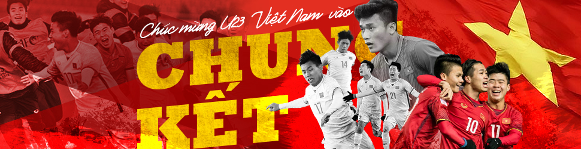
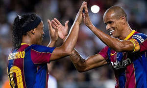
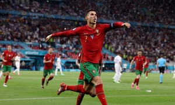

-
Mourinho dùng công nghệ tại Roma
Máy bay không người lái là một trong những thiết bị được Jose Mourinho sử dụng để phục vụ huấn luyện tại AS Roma.
-
Brazil 0-1 Argentina
Bàn duy nhất của Angel di Maria giúp Argentina hạ Brazil trong trận chung kết sáng 11/7, và vô địch Copa America 2021.
-

Danh thủ Barca 2-3 Danh thủ Real
Ronadinho mở tỷ số, nhưng đội Danh thủ Barca vẫn thua các Danh thủ Real trong trận cầu biểu diễn tại trên sân Bloomfield, Israel hôm 20/7.
-
Hành trình Messi cùng Argentina vô địch Copa America
Lionel Messi ghi bốn bàn, kiến tạo năm bàn giúp Argentina vô địch Copa America 2021 hôm 10/7.
-
Rooney: 'Sancho sẽ giúp Man Utd đoạt danh hiệu'
Theo cựu tiền đạo Wayne Rooney, với tân binh Jadon Sancho, Man Utd sẽ là ứng cử viên nghiêm túc cho ngôi vô địch Ngoại hạng Anh.
-

Bồ Đào Nha 2-2 Pháp: Ronaldo lập kỷ lục
Cú đúp trước Pháp ở lượt cuối bảng F Euro 2021 hôm 23/6 giúp Cristiano Ronaldo chạm mốc 21 bàn, phá kỷ lục ghi bàn ở Euro và World Cup.